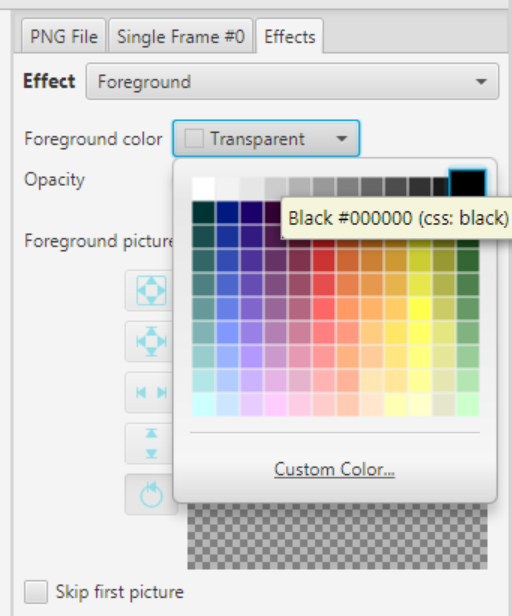
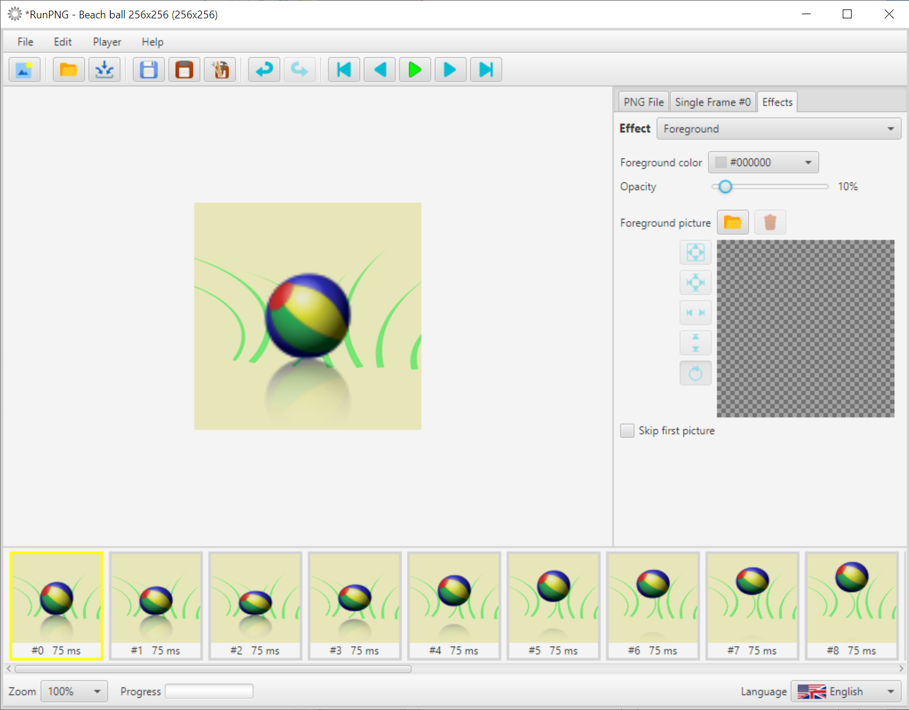
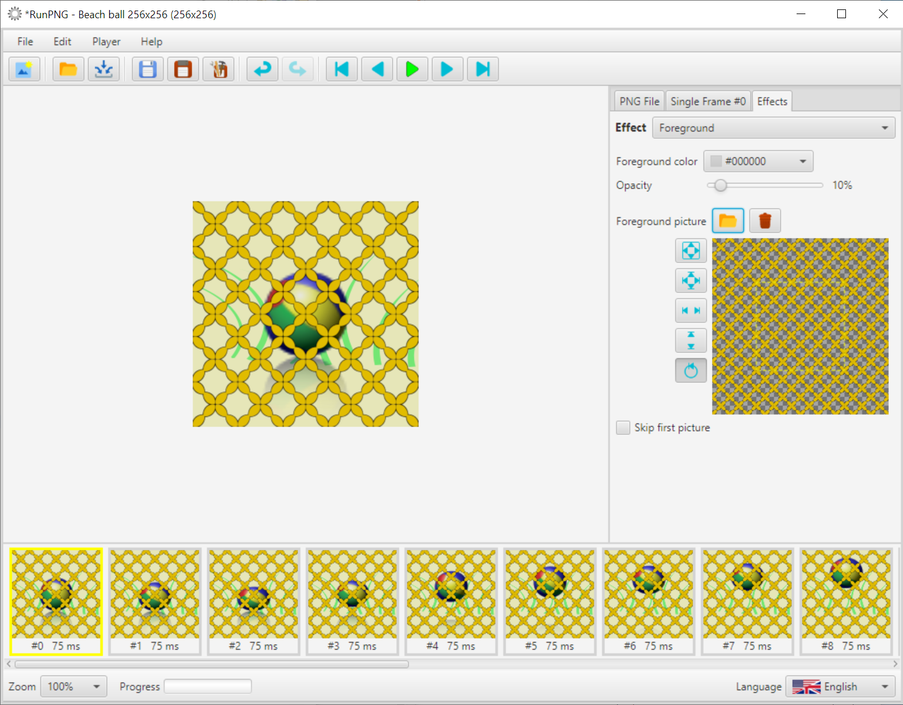
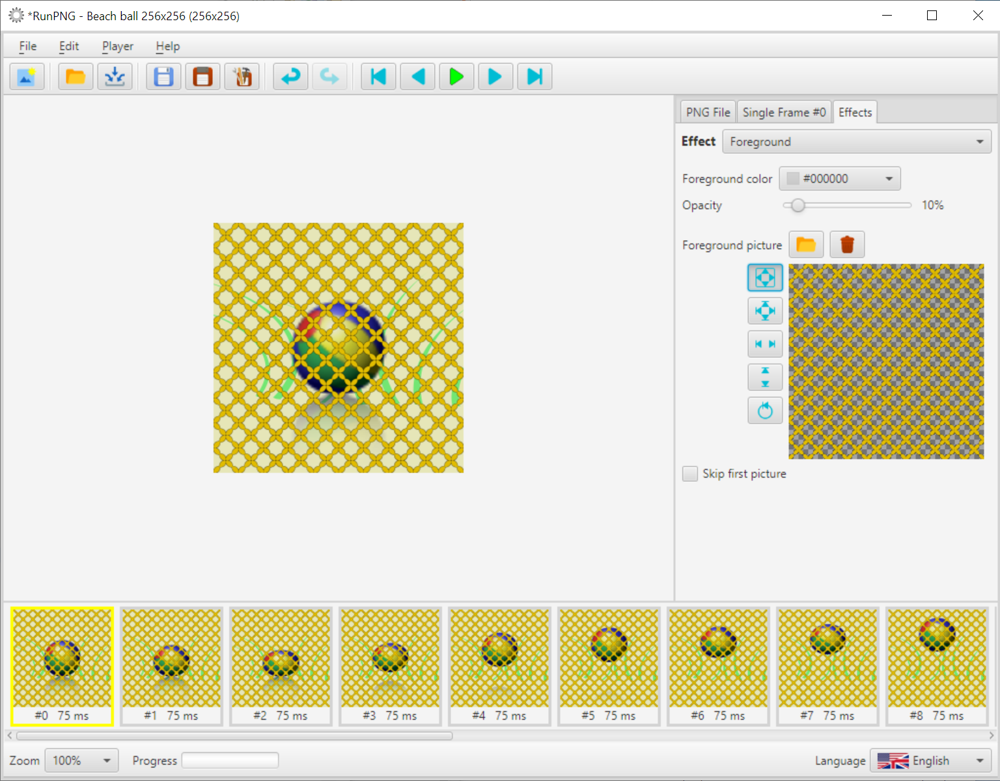

Foreground
A foreground color should be translucent to transparent so that you can see something of the actual graphic. The same applies to the foreground image. To try out this effect, we first load an animated beach ball into the working memory. The image is located at RunPNG/doc/samples/various/Beach ball 256x256.png. It is an APNG file and consists of 20 individual images. We don't need to change any setting. Or we continue to use the picture from the Background section, as shown here.
The Foreground effect can be found under the Effects tab. Let's start with the Foreground color. To do this, click on the color selector and choose any color. E.g. black. And we see that we see no picture anymore. The reason is already explained above. The foreground color needs to be made translucent using the Opacity slider. 100% corresponds to full coverage, 0% is completely transparent.
With only 10% opacity, there is now a slight haze over the image. The selected color foreground has an immediate effect on all individual images and is blended over the colors behind it.
Now a foreground image is added. It's located at RunPNG/doc/samples/various/net orange.png. Beach, beach ball, net seems to be a suitable combination. But you can see that the foreground image is too big. It has 512 x 512 pixels. Whoever likes it can leave it that way. The protruding parts are removed by the application when the images are put together.
Or you can scale the foreground image symmetrically with the button . This would make the net finer-meshed.